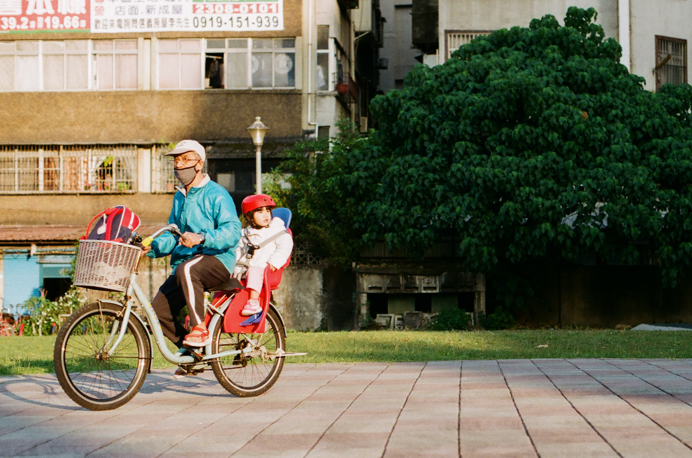

黃絲嫻
企管二乙
《夜間理髮廳》
清幽的黑夜裡，理髮廳照亮了整條街!
企管二乙
《夜間理髮廳》
清幽的黑夜裡，理髮廳照亮了整條街!
陳雅巳
財金四乙
《Slow Dancing in a Burning Room》
心頭的白鴿，奔向你的溫熱。
我想成為一個歌頌者， 在火焰顛倒這個世界時， 擁抱你的背影。
財金四乙
《Slow Dancing in a Burning Room》
心頭的白鴿，奔向你的溫熱。
我想成為一個歌頌者， 在火焰顛倒這個世界時， 擁抱你的背影。
郭祐宇
企管四乙
《芒草小徑》
在兩側矗立微顯綠意仍未綻放的芒草小路中
捕捉不經意又唯美的瞬間而形成的畫面
企管四乙
《芒草小徑》
在兩側矗立微顯綠意仍未綻放的芒草小路中
捕捉不經意又唯美的瞬間而形成的畫面

張峻瑋
環工一
《歸途》
一台車上，卻裝載著兩顆不同的心，一個一心向家，一個意猶未盡。
環工一
《歸途》
一台車上，卻裝載著兩顆不同的心，一個一心向家，一個意猶未盡。
邱慶勛
資管三甲
《黃金時刻》
在一生中最美的時光，遇上最美的風景與人，是最美好的事情
資管三甲
《黃金時刻》
在一生中最美的時光，遇上最美的風景與人，是最美好的事情
陳宛葇
商設一
《海邊的你》
望著正在走遠的你，我卻越來越模糊。
（底片相機意外的對焦效果，像是用緣分講述畫面的故事，對於海的著迷、對於感情的憧憬）
商設一
《海邊的你》
望著正在走遠的你，我卻越來越模糊。
（底片相機意外的對焦效果，像是用緣分講述畫面的故事，對於海的著迷、對於感情的憧憬）
黃戎瑍
生物醫學工程
《等待》
空蕩的月台
象徵著駛離火車上的啟程
而我背著疲倦 一次次等著
屬於我的那個班次
生物醫學工程
《等待》
空蕩的月台
象徵著駛離火車上的啟程
而我背著疲倦 一次次等著
屬於我的那個班次

吳賚彥
應外三甲
《止不住的愛意》
“愛喝酒”對您們來說或許是貶義詞，
對我來說卻是能讓人安心入眠的良藥，
更是在我快要撐不住時的能量飲。
我愛喝酒，以至於人生再也離不開酒。
應外三甲
《止不住的愛意》
“愛喝酒”對您們來說或許是貶義詞，
對我來說卻是能讓人安心入眠的良藥，
更是在我快要撐不住時的能量飲。
我愛喝酒，以至於人生再也離不開酒。